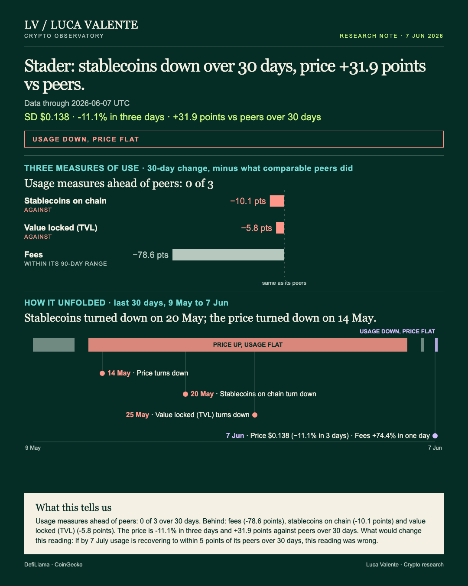
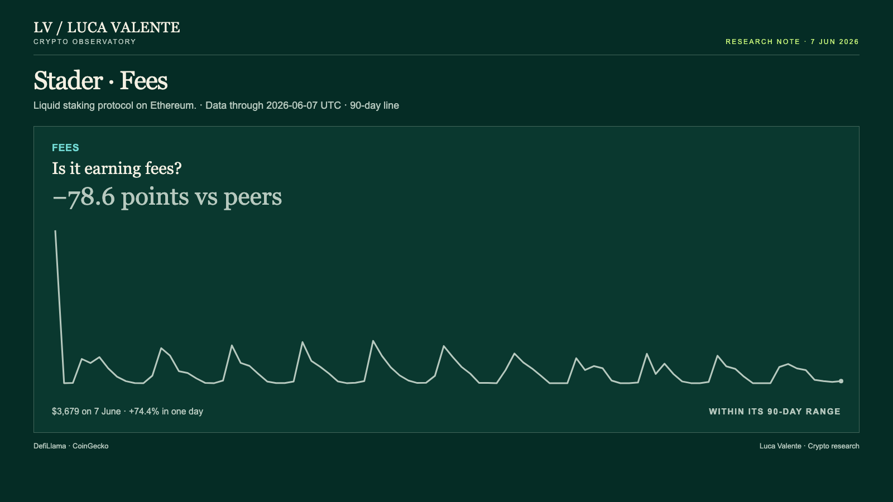
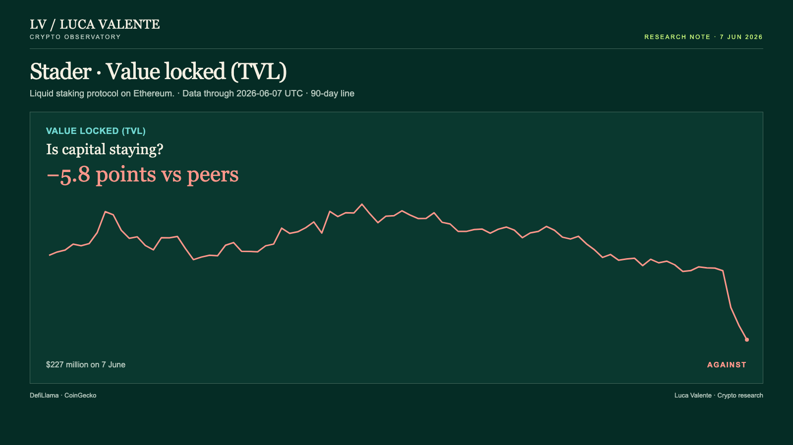

Training note, written on 23 September 2026 from data as of 7 June 2026. Not part of the published series.
Has SD's Price Caught Up With Stader's 91.2% Fee Drop?

Stader's fees jumped 74.4% in a single day, then the month told a different story. If you are pricing Stader's income off one day, this is the day that would mislead you.
It's a liquid staking protocol on Ethereum. Its token, SD, is one of nine priced tokens in the Liquid Staking group this note measures it against. The cover header calls it usage down, price flat. It sets three bars, fees, stablecoins on the chain, and value locked, against the group's median.
The numbers here run through 7 June. Comparisons over 30 days stretch back to 9 May. None of it started on the end date.
Price turned down first, on 14 May, 24 days earlier, and fell in 17 of the following 25 days. Stablecoins on the chain turned down on 20 May and fell in 16 of the next 19.
Value locked turned down on 25 May and has fallen in 9 of the 12 days since. Fees turned down last, on 2 June, and have fallen in 5 of the 6 days since.
Users pay fees to use the protocol; they stood at $3,679 on 7 June. Over 30 days they fell 91.2%, while the 20 entities in the group that report fees fell a median 12.7%. Stader sits 78.6 points behind them.

Value locked is the money parked in Stader's contracts. It was $227 million on 7 June, down 7.2% from $244 million a day earlier. Over 30 days it fell 35.4%. The 28 entities in the group that report it fell a median 29.6%, a gap of 5.8 points.

On the Ethereum chain Stader runs on, stablecoins closed at $158.75 billion on 7 June. That money isn't Stader's; it's the chain's. Over 30 days it fell 4.9%. The 30 entities in the group that report this measure rose a median 5.2%, a 10.1-point gap.
SD tells a different story. It closed at $0.138 on 7 June, up 1.7% on the day, down 11.1% over three days. Over 30 days it's down just 0.8%.
The nine priced tokens in the group fell a median 32.7% over 30 days. Against that, SD's 0.8% decline puts it 31.9 points ahead of its peers.
Still, the price is the one measure here that does not fit my reading. But the gap isn't a mark in Stader's favor. The group's own price simply fell harder than Stader's did.
I first read the 74.4% jump in fees as a turn. It isn't. Fees have fallen in 5 of the 6 days since 2 June, and the 30-day change is still down 91.2%. One big day doesn't undo that.
Twenty-seven of the other 32 protocols in the group have had a drop in value locked this size before. Today's one-day drop, 7.2%, is the yardstick. Since September 2025, 221 drops at least that large have hit those 27 protocols. Stader itself has had 5.
A week after a drop like this, value locked was back at the earlier level in 3 of Stader's 5 cases. In the group, it happened in 99 of 221. A month out, only 1 of Stader's 5 had recovered, and 53 of the group's 216; five cases are too recent for a month's answer. Five is a small sample: I won't call it a pattern.
There's no news behind any of this. Nothing I have explains the move. Any reason I gave would be invented.
Wallets and users aren't counted here either. Usage means fees, stablecoins on the chain, and value locked, nothing else. I also don't have DEX volumes, L2 transactions or developer commits for Stader; none of them are recorded here.
Something could still prove this wrong, and it runs through that same price gap. Everything here stops on 7 June; nothing past that date is in view. If by 7 July usage is recovering to within 5 points of its peers over 30 days, this reading was wrong.
My read: usage is behind on every measure that reports it here, and the price hasn't caught up to that yet. Whether it does by 7 July is the question I'm holding open.
Sources: DefiLlama, CoinGecko.
Peer group: 33 liquid staking protocols tracked by DefiLlama. 'Net of the group' is the 30-day change minus the group's median.
Not financial advice. This is a research note based on public on-chain data.